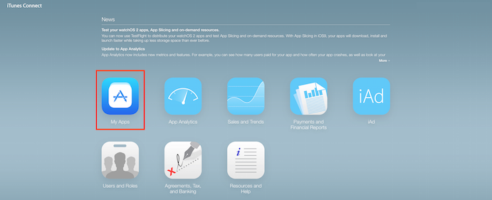
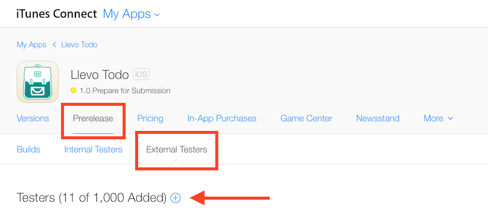
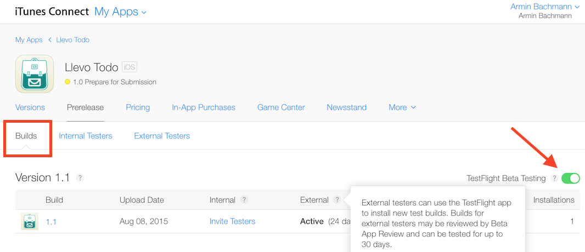
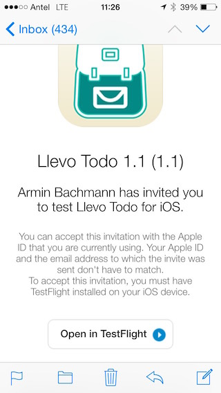
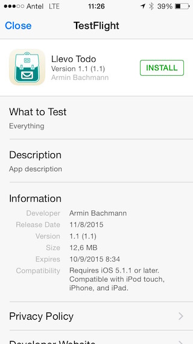

Android and iOS have beta testing platforms that make the process easier and allow users to test applications more naturally. Instead of sending the users an .APK or an .IPA -which is not always possible on iOS-, you can upload your application to the stores and invite some users to test it.
Beta Testing on iOS can be done using TestFlight. What do we need to do to use Testflight?
- First of all, login to iTunes Connect and go to My Apps:

- Now select the application you want to test, open the tab Prerelease -> External Testers and click the + button to start adding users:

NOTE: The process is similar for Internal Testers, but these testers have to be developers included on your account and only enterprise accounts have multiple users.
- To continue you must have uploaded a build of your application -HowTo: Publishing an application to the Apple App Store.
Builds that will be tested by external users require the approval of Apple. Once the build was approved by Apple, you can enable TestFlight Beta Testing, and this build will be made available to your testers in the TestFlight app:

and the invited users will receive an email with an invitation to test your app:
 
|